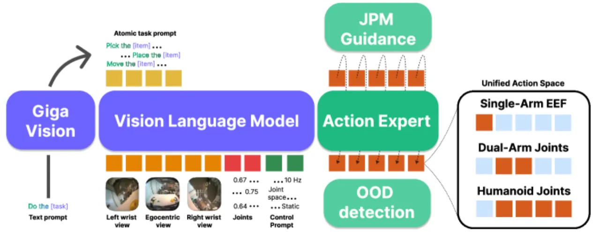
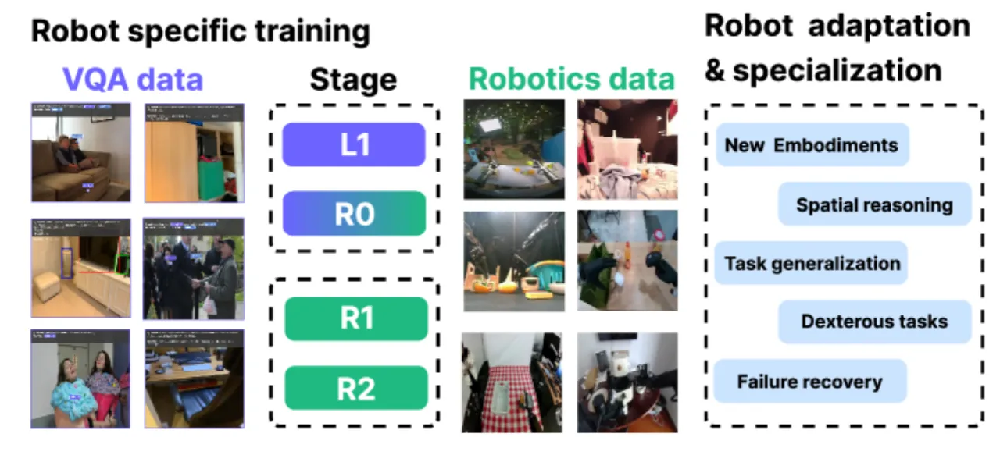
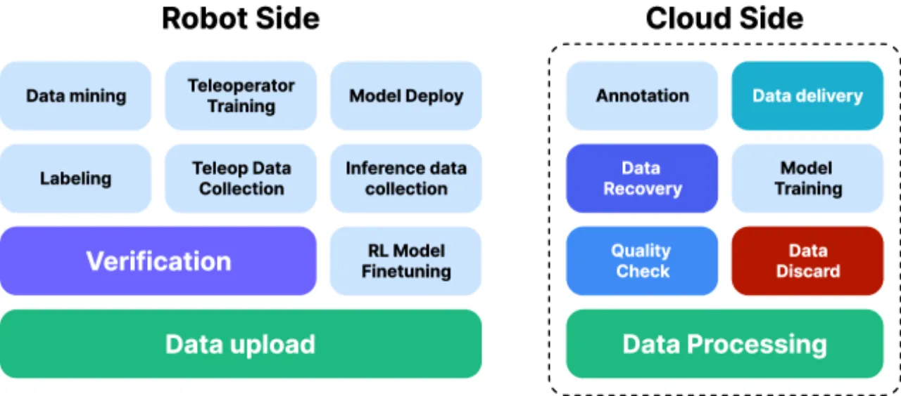
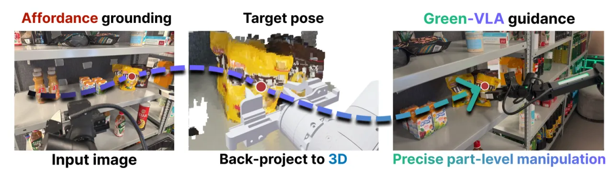
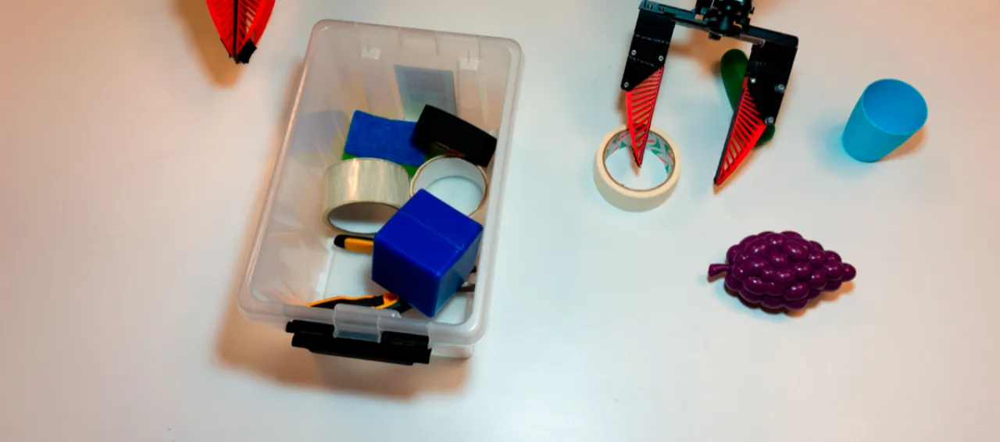
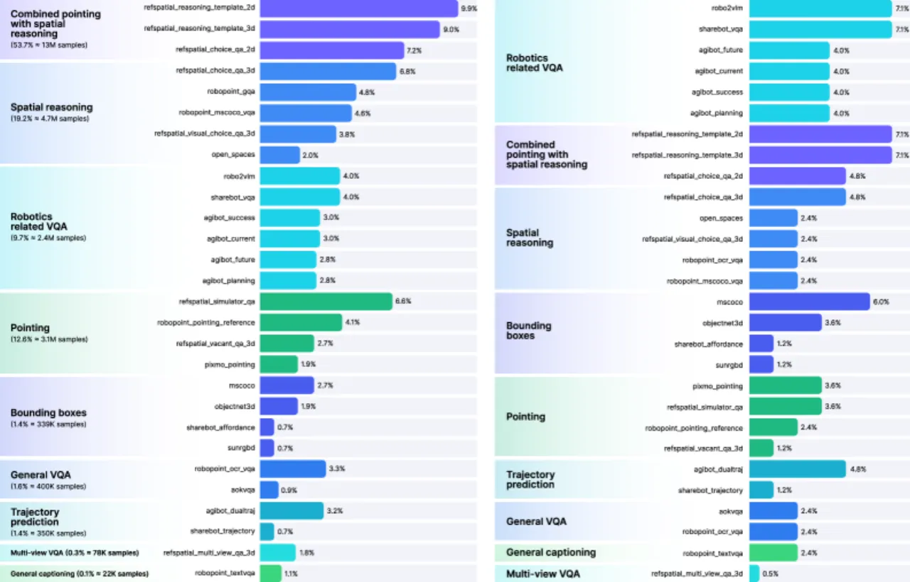
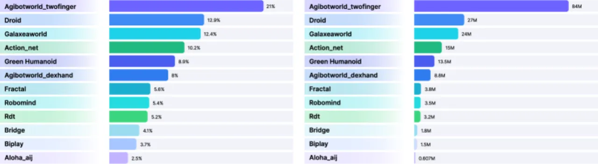

Green-VLA 提出一套五阶段课程式训练框架，通过统一动作空间与强化学习对齐，将大规模视觉-语言模型转化为可跨机器人本体泛化的操控策略。该系统在 3,000+ 小时演示数据上训练，并在双臂桌面清理、电商货架拣选及人形机器人操控等多项真实任务中达到业界领先水平。
当前 VLA 研究过于依赖简单的数据扩展，而忽视了真实部署中的根本障碍：数据异构性、数据质量参差不齐，以及 behavior cloning 的内在局限。
"robotic datasets are inherently heterogeneous in terms of observations, action spaces, and sampling rates"
——数据层面的异构使得跨机器人泛化极为困难。

真实机器人数据中大量轨迹存在抖动、模糊帧、执行不一致及场景多样性不足等问题，导致直接扩展数据量收益递减。
"the predominant training paradigm remains behavior cloning (BC)…this approach quickly saturates and fails to align policies to long-horizon objectives."
不同机器人本体（人形、移动操作臂、固定臂）具有不同的动作维度与语义，简单 zero-padding 会"destroys positive transfer"。
Green-VLA 的方案是"beyond data scaling by emphasizing quality alignment, action unification, and reinforcement learning refinement"。
Green-VLA 由五个递进训练阶段、统一动作空间设计、DataQA 数据质量管线、时序对齐、OOD 检测，以及 JPM 精确目标引导等核心组件构成。

Green-VLA 定义统一动作空间 𝒜u ⊂ ℝ64，使每个索引范围在所有机器人上具有一致的物理语义，避免零填充破坏迁移学习。掩码 BC 目标函数为：
ℒuni(θ) = 𝔼[‖me ⊙ (πθ(xte, ce) − Φe(ate))‖²₂]
其中 me 标记有效 slot，消除无效维度上的虚假梯度。动态本体提示（dynamic embodiment prompting）将机器人结构信息（手臂数、手部类型、关节/笛卡尔空间、移动/固定等）编码为条件输入。

通过四项质量指标对原始轨迹进行自动筛选：
使用基于光流幅值的重采样对轨迹进行速度归一化，并通过速度因子 v∈[0,1] 进行 RMS 风格调制：
h̃t = RMSNorm(ht), ĥt = γ(v)h̃t + β(v)
使同一模型能同时表征精细操控和较快粗动作。

使用在训练集机器人状态上拟合的高斯混合模型（GMM）：ptrain(s) = ∑k ϕk 𝒩(s|μk, Σk)，当 ptrain(s) 低于阈值 τood 时，将预测动作修正回训练分布方向。
采用两种互补的 RL 方法：
实验涵盖真实机器人与仿真环境多个 benchmark，对比 π0、GR00T N1、WALL-OSS、AgiBot GO-1 等多项基线，验证了分阶段训练和 RL 对齐的有效性。

| 方法 | Tape | Screwdrivers | Pliers | First Item SR | AVG Time |
|---|---|---|---|---|---|
| π0 | 46.3% | 29.7% | 31.8% | 35.6% | 2m59s |
| GR00T N1 | 38.9% | 35.4% | 29.5% | 33.2% | >5m |
| WALL-OSS | 27.4% | 14.2% | 27.3% | 12.1% | >5m |
| AgiBot GO-1 | 57.8% | 48.6% | 33.2% | 38.4% | 3m57s |
| Green-VLA (R0) | 83.1% | 52.1% | 63.7% | 69.5% | 1m35s |
在 Google Robot（Visual Matching 任务）和 WidowX 两个仿真设置下与多个基线对比：
| 任务 | Green-VLA R1 (Qwen3) |
|---|---|
| Drawer | 64.8% |
| Move Near | 75.8% |
| Pick Coke | 85.7% |
| Apple | 81.5% |
| Average | 77.0% |
| 任务 | R1 Pick | R2 Pick | R2 Task SR |
|---|---|---|---|
| Spoon | — | — | 79.2% |
| Eggplant | — | — | 91.7% |
| Carrot | — | — | 62.5% |
| Average | 89.6% | 94.6% | 80.5% |

| 配置 | ID-Coarse（域内粗粒度） | ID-SKU（域内精细） | OOD（域外） |
|---|---|---|---|
| Green-VLA（无 JPM） | ~45% | ~35% | ~20% |
| Green-VLA（有 JPM） | ~75% | ~62% | ~48% |

在 CALVIN ABC→D 基准上，R2 RL 对齐在长程一致性和组合任务成功率上取得实质性改善，优于 π0 和 Flower 基线。WidowX 拣选成功率从 R1 的 89.6% 提升至 R2 的 94.6%（Pick Success），任务成功率从 72.9% 提升至 80.5%。
在人形机器人（Green Robot）的指令条件操控任务上，系统支持：拾取、放置、递交物品给用户、水果分拣，以及完整桌面清理序列，域内平均成功率约 85%，域外约 78%。高层任务规划器可将"将苹果和橙子分拣到篮子中"等复杂指令自动分解为子任务并逐一执行。
"Green-VLA's performance still depends on retargeting fidelity, residual dataset bias, and adequate coverage of dexterous skills." 当数据集偏差较大或目标技能覆盖不足时，泛化能力下降。
作者明确指出未来工作需"extending multilingual instruction following"，当前版本对非英语指令的支持有限。
论文提到需要"strengthening the coupling between fast reasoning and real-time control"，暗示当前 VLM 推理速度在高频控制场景中可能成为瓶颈。
R2 阶段采用离线 IQL 和轨迹优化，其效果受限于训练集的覆盖范围和 Q 函数估计的准确性。论文指出需"integrating online data collection with safety-aware RL to further reduce failure modes"。
JPM 将 2D 可供性点通过摄像头几何提升到 3D，并求解逆运动学。该流程对相机内外参精度和深度估计质量敏感，在无结构/遮挡环境中可能失效。